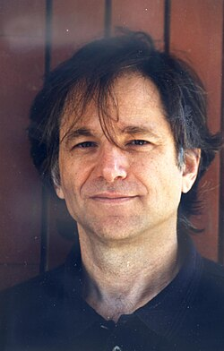

Leonard Adleman | |
|---|---|
 | |
| Born | Leonard Max Adleman December 31, 1945 San Francisco, California, US |
| Education | University of California, Berkeley (BA, MA, PhD) |
| Known for | RSA |
| Awards | Turing Award (2002) |
| Scientific career | |
| Fields | Computer science Cryptography |
| Institutions | University of Southern California |
| Thesis | Number-Theoretic Aspects of Computational Complexity (1976) |
| Manuel Blum | |
{kind=link}
Leonard Max Adleman (born December 31, 1945) is an American computer scientist. He is one of the creators of the RSA encryption algorithm, for which he received the 2002 Turing Award.[1] He is also known for the creation of the field of DNA computing and coining the term computer virus.[2]
Biography
Leonard M. Adleman was born to a Jewish[3] family in California. His family had originally immigrated to the United States from modern-day Belarus, from the Minsk area.[3] He grew up in San Francisco and attended the University of California, Berkeley, where he received his B.A. degree in mathematics in 1968 and his Ph.D. degree in EECS in 1976.[1][4] He was also the mathematical consultant on the movie Sneakers.[5] In 1996, he became a member of the National Academy of Engineering[6] for contributions to the theory of computation and cryptography. He is also a member of the National Academy of Sciences.[7]
Adleman is also an amateur boxer and has sparred with James Toney.[8]
Discovery
In 1994, his paper Molecular Computation of Solutions To Combinatorial Problems described the experimental use of DNA as a computational system.[9] In it, he solved a seven-node instance of the Hamiltonian Graph problem, an NP-complete problem similar to the travelling salesman problem. While the solution to a seven-node instance is trivial, this paper is the first known instance of the successful use of DNA to compute an algorithm. DNA computing has been shown to have potential as a means to solve several other large-scale combinatorial search problems.[10] Adleman is widely referred to as the Father of DNA Computing.[11]
In 2002, he and his research group managed to solve a 'nontrivial' problem using DNA computation.[12] Specifically, they solved a 20-variable SAT problem having more than 1 million potential solutions. They did it like the one Adleman used in his seminal 1994 paper. First, a mixture of DNA strands logically representative of the problem's solution space was synthesized. This mixture was then operated algorithmically using biochemical techniques to winnow out the 'incorrect' strands, leaving behind only those strands that 'satisfied' the problem. Analysis of the nucleotide sequence of these remaining strands revealed 'correct' solutions to the original problem.[1]
He is one of the original discoverers of the Adleman–Pomerance–Rumely primality test.[13][14]
Fred Cohen, in his 1984 paper, Experiments with Computer Viruses credited Adleman with coining the term "computer virus".[15]
As of 2017, Adleman is working on the mathematical theory of Strata. He is a Computer Science professor at the University of Southern California.[16]
Awards
For his contribution to the invention of the RSA cryptosystem, Adleman, along with Ron Rivest and Adi Shamir, has been a recipient of the 1996 Paris Kanellakis Theory and Practice Award and the 2002 Turing Award, often called the Nobel Prize of Computer Science.[1] Adleman was elected a Fellow of the American Academy of Arts and Sciences in 2006[17] and a 2021 ACM Fellow.[18]
See also
References
- ^ a b c d "Leonard M. Adleman | American computer scientist". Encyclopædia Britannica. Retrieved 2015-11-24.
- ^ "Professor Len Adleman explains how he coined the term "computer virus"". www.welivesecurity.com. Retrieved 2024-12-26.
- ^ a b Leonard (Len) Max Adleman 2002 Recipient of the ACM Turing Award Interviewed by Hugh Williams, August 18, 2016 amturing.acm.org
- ^ Leonard Adleman at the Mathematics Genealogy Project
- ^ "Sneakers". www.usc.edu. Archived from the original on 2015-11-01. Retrieved 2015-11-24.
- ^ "NAE Website - Dr. Leonard M. Adleman". www.nae.edu. Retrieved 2015-11-24.
- ^ "Leonard Adleman". www.nasonline.org. Retrieved 2015-11-24.
- ^ Professor Adleman versus World Champion Boxer – YouTube
- ^ "Adleman Papers". www.usc.edu. Archived from the original on 2016-03-04. Retrieved 2015-11-24.
- ^ Adleman, Leonard M. (November 11, 1994). "Molecular Computation of Solutions to Combinatorial Problems" (PDF). Science. 266 (5187): 1021–1024. Bibcode:1994Sci...266.1021A. CiteSeerX 10.1.1.54.2565. doi:10.1126/science.7973651. PMID 7973651. Archived from the original (PDF) on November 25, 2015.
{{cite journal}}: Cite uses deprecated parameter|citeseerx=(help) - ^ "Leonard Adleman".
- ^ Braich, Ravinderjit S.; Chelyapov, Nickolas; Johnson, Cliff; Rothemund, Paul W. K.; Adleman, Leonard (2002-04-19). "Solution of a 20-Variable 3-SAT Problem on a DNA Computer". Science. 296 (5567): 499–502. Bibcode:2002Sci...296..499B. doi:10.1126/science.1069528. ISSN 0036-8075. PMID 11896237.
- ^ Primality testing algorithms [after Adleman, Rumely and Williams], volume 901 of Lecture Notes in Mathematics. Springer Berlin. 1981.
- ^ "NAE Website - DNA Computing by Self-Assembly". www.nae.edu. Retrieved 2015-11-24.
- ^ Cohen, Fred (1984), Computer Viruses – Theory and Experiments
- ^ "Adleman, Leonard - USC Viterbi Department of Computer Science". www.cs.usc.edu. Archived from the original on 2017-08-22. Retrieved 2017-08-22.
- ^ "Book of Members, 1780-2010: Chapter A" (PDF). American Academy of Arts and Sciences. Retrieved 6 April 2011.
- ^ "ACM Names 71 Fellows for Computing Advances that are Driving Innovation". Association for Computing Machinery. January 19, 2022. Retrieved 2022-01-19.